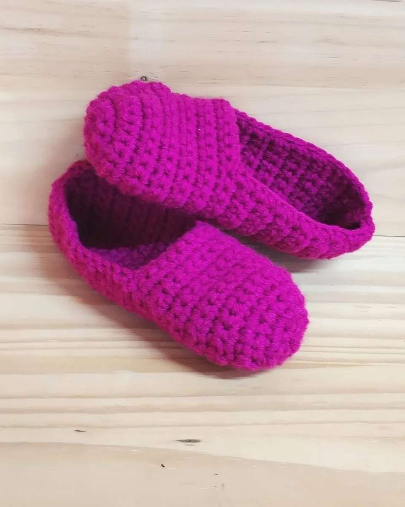
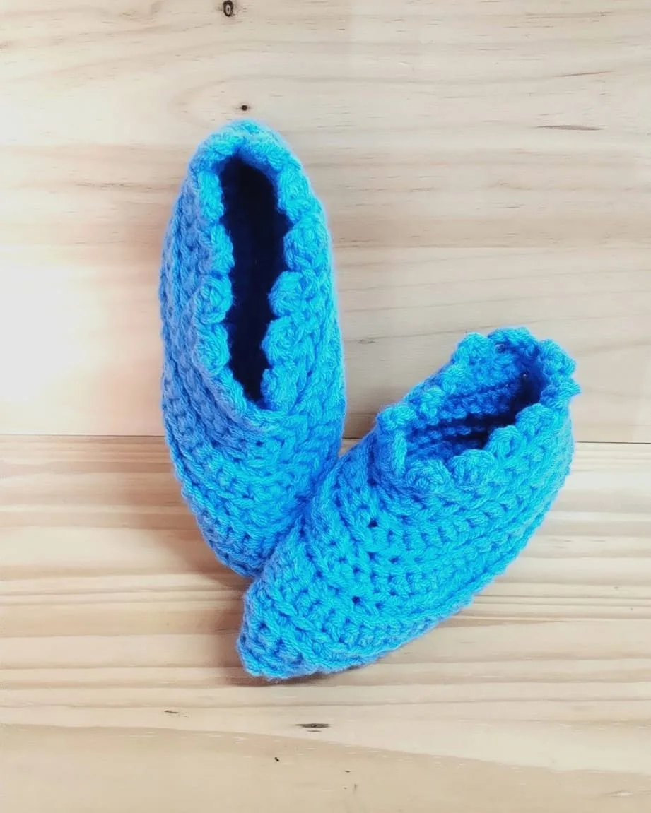
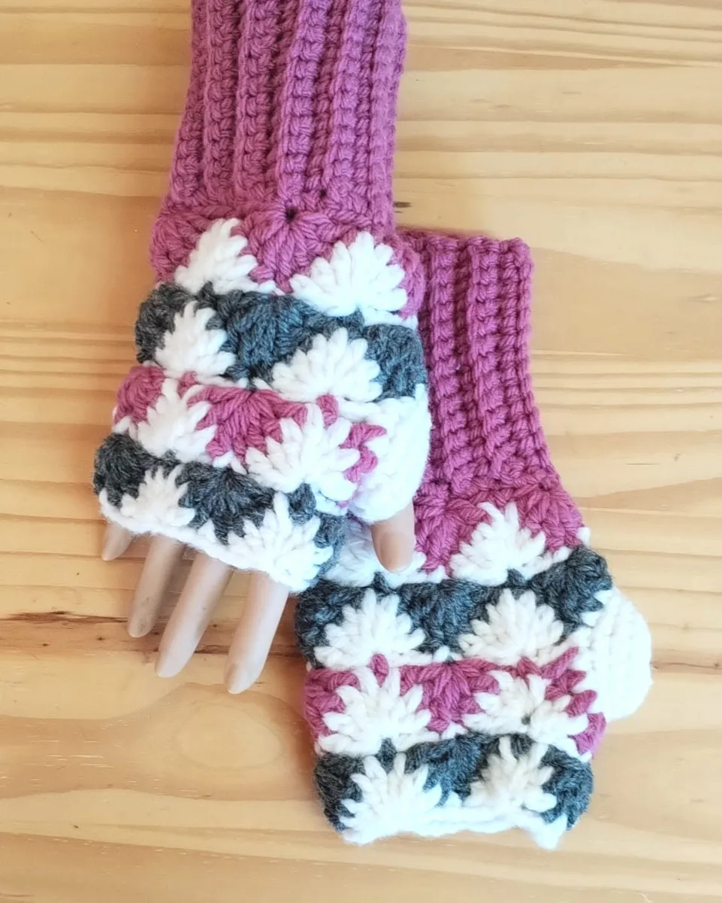
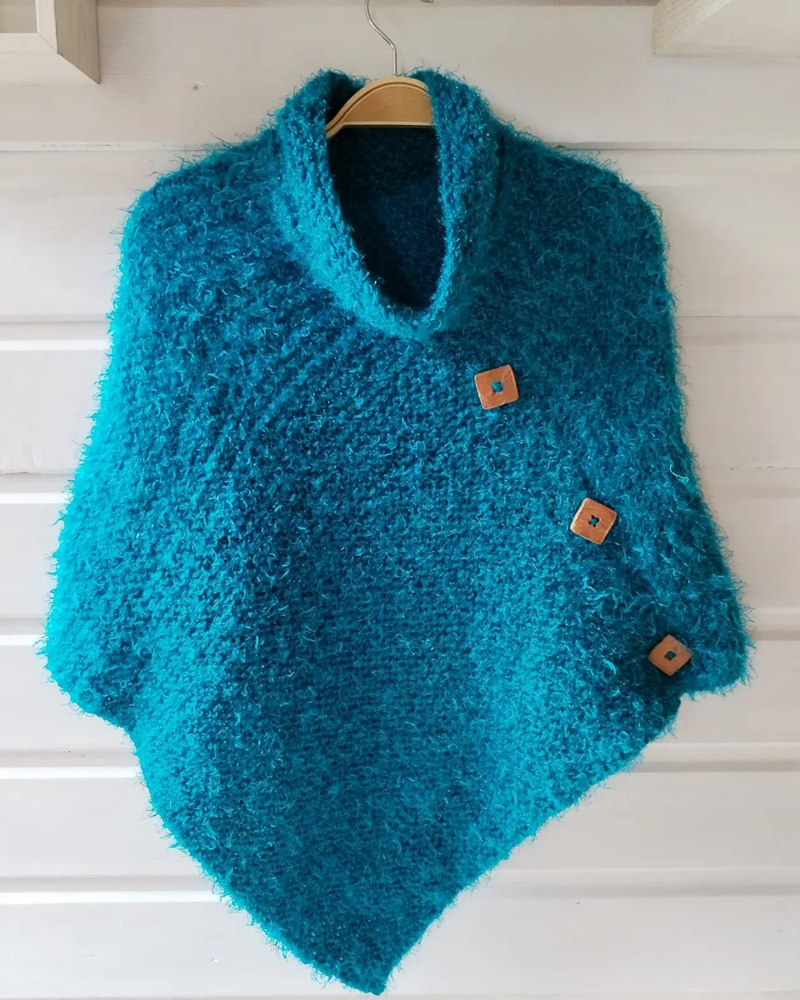
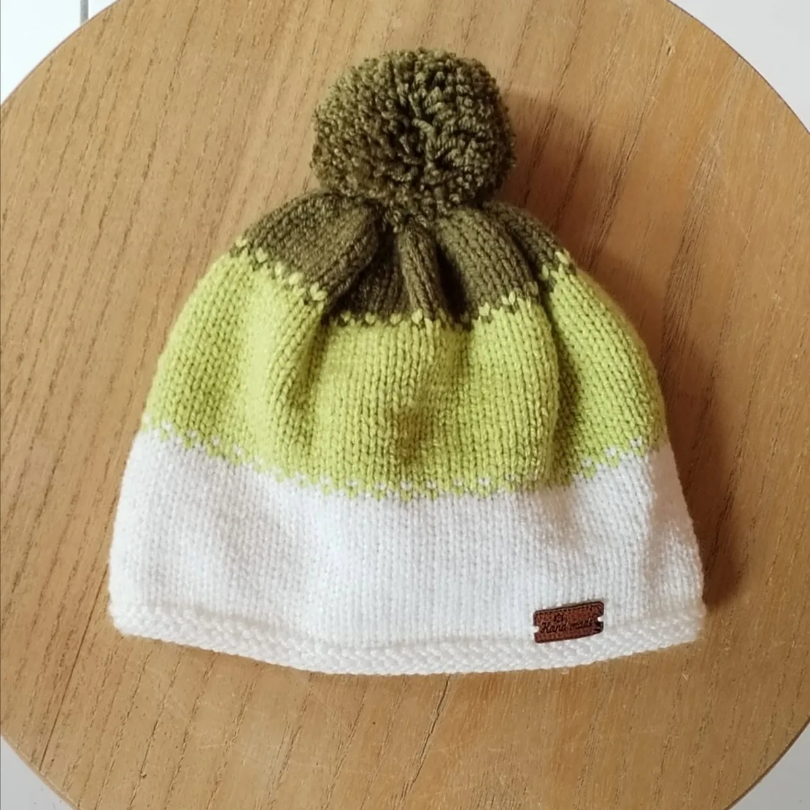

Bérive · Le Tampon
Des Fils et de Fées crée des doudous et des vêtements pour bébés au tricot et au crochet, et aussi des chaussons, des mitaines et des ponchos pour l'hiver austral.

2016artisane depuis
La vitrine
Laine bien chaude, laine de doudou, dentelle au poignet : chaque pièce est pensée pour réchauffer, et pour faire plaisir.



Souvent des modèles uniques : une seule pièce disponible

Cours de tricot et de crochet
Avec de la patience pour deux, Des Fils et de Fées vous accompagne pas à pas, dans un vrai moment de convivialité.
Où la trouver
1 allée des Mouettes, au Tampon : on vient voir, toucher, choisir.
De la Plaine des Palmistes au marché de Noël de Saint-Leu, suivez la page pour connaître les prochaines dates.
Un doudou à offrir, une couleur précise, une taille : parlons-en.